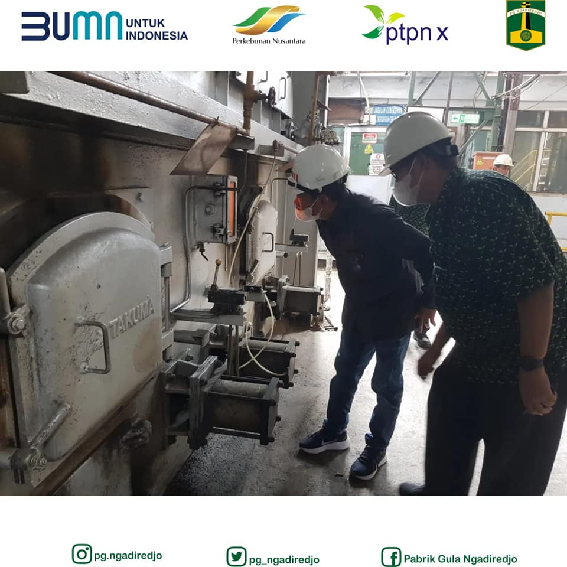
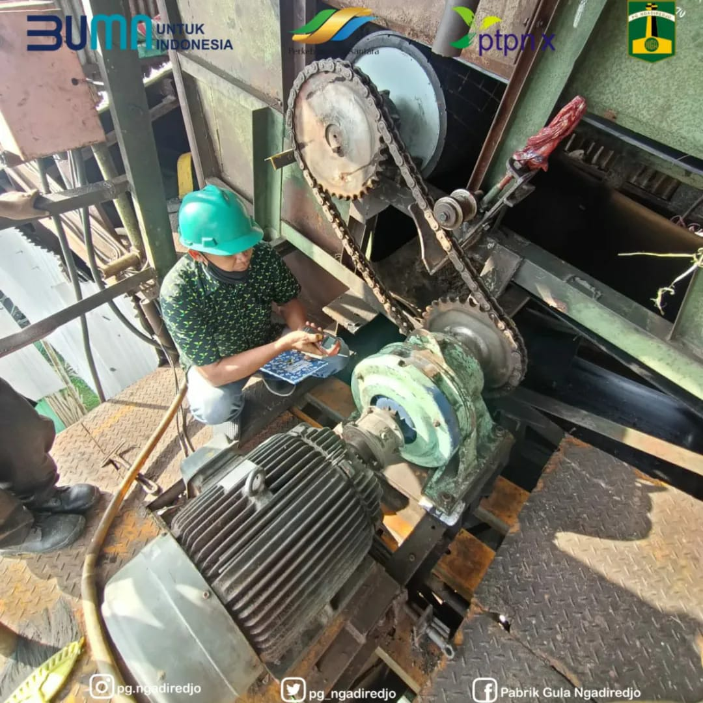
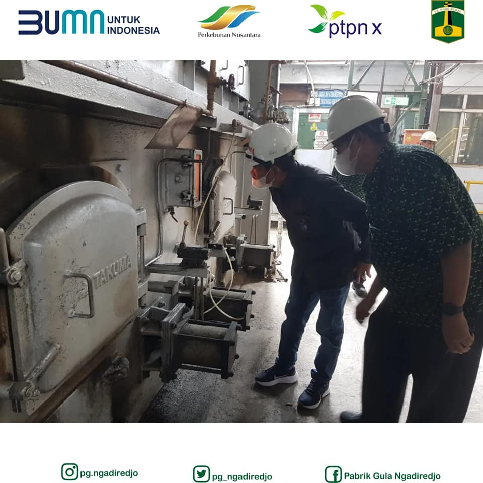
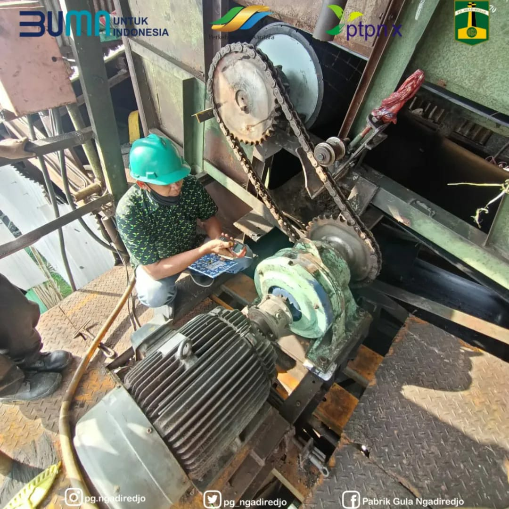

Perkebunan tebu mulai meningkat saat Belanda di bawah kekuasaan Van den Bosch pada tahun 1836. Ia merupakan seorang ahli dalam pengelolaan perkebunan untuk dijadikan komoditas ekspor. Para petani dipaksakan menanam produk agraria seperti kopi, tebu, indigo, tembakau, teh, lada, dan kayu manis Masa pemerintahan Bosch seringkali disebut masa tanam paksa (cultuurstelsel). Produksi gula kolonial difokuskan pada 13 karesidenan yang berlokasi di Jawa Timur dan Jawa Tengah. Pada tahun 1880, industri gula kolonial menjadi rangking teratas komoditas ekspor global. Produksi gula menjadi basis ekonomi internasional bagi pemerintahan kolonial.
Pabrik Gula Ngadirejo didirikan pada tahun 1912 oleh Naamloze Vennootschap Handels Vereniging Amsterdam (NV HVA). Perusahaan swasta tersebut adalah sebuah perusahaan perbankan yang bergerak di bidang perkebunan, NV HVA menguasai 39 unit usaha yang tersebar di Jawa dan Sumatera yang memproduksi komoditas gula, tapioka, karet, kopi, kelapa sawit, dan teh. Bukti sejarah mengenai Pabrik Gula Ngadirejo cukup sulit untuk ditelusuri, hal ini diduga karena kedatangan Jepang ke Indonesia. Dokumen-dokumen mengenai kegiatan produksi pabrik kemungkinan rusak ataupun hilang akibat pendudukan Jepang. Pabrik ini mengalami berbagai pergantian kepemilikan beberapa tahun setelah kemerdekaan. Gerakan nasionalisasi perusahaan asing dilakukan untuk mengambil alih perusahaan swasta Belanda menjadi milik negara. Saat ini, Pabrik Gula Ngadirejo menjadi badan usaha milik negara di bawah naungan PT Sinergi Gula Nusantara. Pabrik ini masih aktif sampai sekarang.
Pabrik Gula Ngadirejo berlokasi di Desa Jambean, Kecamatan Kras, Kediri Jawa Timur. Bangunan-bangunan Pabrik Gula Ngadirejo berada dalam suatu area yang disebut emplasemen. Dalam suatu pabrik, emplasemen merupakan suatu lapangan yang di dalamnya terdapat bangunan-bangunan dan sarana lain yang mendukung berlangsungnya kehidupan masyarakat industri. Bangunan-bangunan yang berada dalam emplasemen dengan mengalami banyak perubahan, terdapat bangunan-bangunan baru yang berfungsi untuk menunjang kegiatan produksi. Tetapi, beberapa bangunan pabrik peninggalan Belanda tidak dihancurkan walau tidak digunakan lagi. Bangunan-bangunan tersebut menjadi gudang untuk menyimpan mesin-mesin lama yang rusak dan sudah tidak digunakan.
Bangunan utama pabrik merupakan bangunan terbesar di antara bangunan lainnya. Bangunan ini dibangun pada tahun 1928, tertulis di dinding sebelah selatan bangunan. Terdapat rentang waktu 16 tahun dari pabrik didirikan dengan waktu bangunan utama didirikan, tidak diketahui apakah ada bangunan lama yang digunakan dan kemudian dihancurkan. Pada foto kuno terdapat cerobong asap yang berada di belakang bangunan, cerobong tersebut kini telah dihancurkan. Bangunan ketel uap dan cerobong pada Pabrik Gula Ngadirejo merupakan bangunan baru, bangunan lama ketel uap hanya dijadikan tempat penampungan mesin-mesin rusak. Bangunan gudang gula yang berada di utara emplasemen pabrik pada masa kolonial hanya ada satu bangunan saja, kemudian ditambahkan tiga bangunann karena terjadi peningkatan produksi.
Bangunan lainnya berupa kilang tetes yang berfungsi menampung tetes tebu. Saat ini terdapat enam bangunan kilang tetes pada Pabrik Gula Ngadirejo, lima di antaranya merupakan bangunan baru. Bangunan lama kilang tetes berukuran lebih kecil dan sudah tidak digunakan. Ada juga infrastruktur lainnya berupa gudang karung, gudang material, dan saluran irigasi yang mendukung aktivitas produksi. Saluran irigasi yang dahulu memanfaatkan aliran anak Sungai Brantas sudah digantikan dengan pipa yang menyedot langsung ke Sungai Brantas. Infrastruktur lainnya yang ada dalam Pabrik Gula Ngadirejo adalah jaringan rel yang berfungsi untuk mengangkut tebu dari perkebunan dengan lori-lori yang ditarik oleh lokomotif. Sekarang lokomotif tersebut sudah tidak dipakai sejak tahun 2002 dan digantikan oleh traktor. Lokomotif telah dimonumenkan di selatan bangunan gudang gula.
Selain bangunan-bangunan pabrik, ada juga bangunan perumahan untuk pegawai yang terletak di luar emplasemen. Persebaran bangunan diatur berdasarkan tingkatan jabatan mereka. Terdapat lebih dari 60 bangunan untuk pegawai, tetapi hanya ada sekitar 38 bangunan yang masih mempertahankan bentuk aslinya. Bangunan-bangunan tersebut antara lain rumah administratur pabrik, rumah pegawai kelas menengah, dan rumah pegawai kelas bawah. Ada juga sarana kesehatan berupa poliklinik di sebelah selatan bangunan pabrik, kini bangunannya telah dialihfungsikan menjadi rumah. Terdapat juga sarana olahraga berupa lapangan tenis di sisi tenggara bangunan utama pabrik berdasarkan foto kuno. Keletakan sarana olahraga dan kesehatan yang berada dekat perumahan kelas atas dan menengah menunjukkan bahwa fasilitas tersebut hanya digunakan oleh kedua kelas sosial tersebut.
Keterlibatan masyarakat lokal dalam industri gula menyebabkan sistem sosial di lingkungan sekitar pabrik berubah. Sebelum adanya pabrik, masyarakat menerapkan sistem sosial yang bersifat feodal, dimana tuan tanah memiliki jabatan lebih tinggi. Namun, semuanya berubah menjadi sistem sosial dalam ruang lingkup industri gula semenjak pabrik didirikan. Sistem golongan sosial pada Pabrik Gula Ngadirejo terbagi menjadi tiga kelas. Golongan kelas atas merupakan pemilik modal dan alat-alat produksi, contohnya administratur. Golongan kelas menengah adalah mereka yang memiliki keahlian, contohnya ahli tanaman tebu, ahli mesin, dan ahli produksi gula. Golongan kelas bawah merupakan buruh yang mengandalkan tenaga (pribumi) yang dieksploitasi oleh para petinggi pabrik. Orang-orang kulit putih menempati golongan sosial pertama dan kedua, sedangkan orang-orang pribumi menempati stratifikasi sosial paling rendah. Hal ini menunjukkan dominasi kekuasaan dimiliki oleh orang-orang kulit putih, yakni orang Eropa.
-------------------------------------------------------------
 


